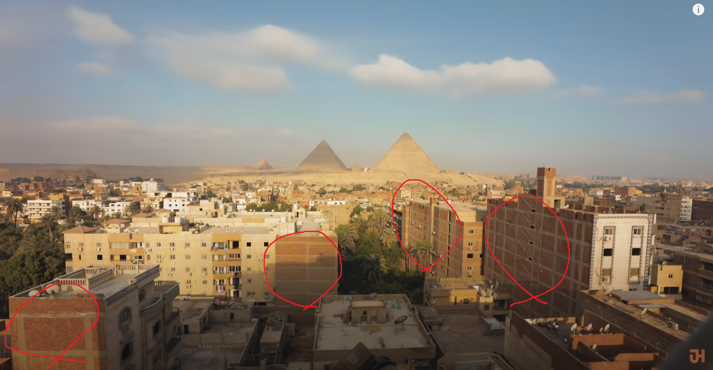
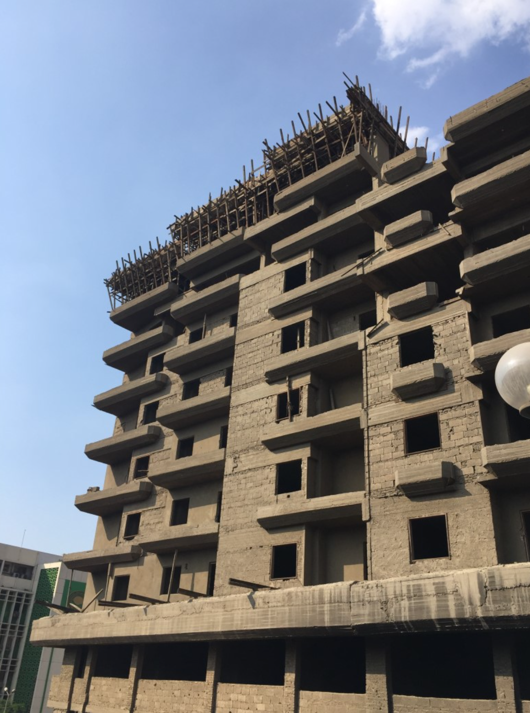

완공하면 세금나오니까 대충 짓다만 상태로 방치해서


완공하면 세금나오니까 대충 짓다만 상태로 방치해서
사람들어가서 사는 흔적 보이면 세금 ㄱㄱ
노숙자가 들어왔었나봅니다 그려
아님.. 내가 갔던 이집트 사람들 전부
저런 건물에서 잘살고 있음
그렇게 이집트는 건물이 한채도 없는 땅으로
완공 전까지 거주 불가로 바꾸면 해결!
쟤들이 맘대로 들어와서 사는데 제가 우짭니까
그러면 들어와 사는 사람들한테 세금을 물리면되겠네
우리나라는 준공이나 임사 안나오면 전기수도가스 싹다 못쓰는데... 대단한 나라구만
검사를 얼마나 대충하면
그냥 다 알면서 눈 감아주는거지 뭐
근데 저런 경우는 거의 돈 받고 저러는 게 문제지
ㄹㅇ 그렇긴해 ㅋㅋ
수도관이 깔리면 세금 물리는걸로 하죠?
그럼 수도관을 안깔고 길어다 쓰는걸로...
파쿠르하기 좋아보이네
이집트 인구가 폭발적으로 늘어서 감당 안 된다 그러더니 저런 상태라도 분양이 되나보네
내가 이집트놈한테 들었는데 꼭대기 한 층만 미완성상태로 두면 된다던대
그럼 있으나마나 한 법아니야? 왜 놔두는거지
세금은 국고로 들어가지만 뒷돈은 내주머니로 들어오잖아 ㅋㅋ
배웠다 ㅅㅂ!
무허가건축물에 대한 불이익은 없나?

저렇게 된지 오래됐는데 뭐 고칠 생각이 없는건지ㅋㅋㅋ 대체 얼마나 썩어빠진걸까
배틀필드 6에 고증됨
쪽팔려서라도 법 뜯어고치겠다 진짜 개병신국가
서재로가 멕시코 인가 남미편에서 말해줘서 알음. 시간지나면 저기다 자체적으로 뺑끼칠하고 커스터마이징함ㅋ 좀더 나가면 거의 완공 다해놓고 옥상에 철골 튀어나오게함. 나중에 돈벌면서 벽돌사고 증축하고.. 자산축적이 눈에 보이니까 당사자입장에선 좋을거같긴함
완공 안된 건물에 입주하게 둔다고? ㄷㄷ
낭만
우리나라도 60 70년대에 저런 건물들 많았음
저런 세금이 있었던 건 아니고 비슷하게 돈 더 벌면 증축하려고 저렇게 철골 구조 등을 튀어나오게 지은 것들 많음. 을지로 쪽이 주로 이랬다더라고
더워서 통풍 되라고 그러는 줄 알았지
일정기간 완공안하면 배로 물려야지
피라미드도 완공 안했을듯
완공시 세금은 왜 내는걸까? 분양시 세금때리는게 여러모로 좋지 않나? 행정력 때문에 그런가... 이해 할 수가 없네.
뭔가 분위기는 얼추 고대이집트 스러워서 괜찮아 보이는..
이집트 여행이 참 재미있었는데 그립구만
송도에 포스코인터 들어가 있는 동북아타워도 포스코 입주전까지 그랬음. 거긴 공실이라 그런거지만
완공 안되도 대출이 나오나
완공지연세X5 를 도입하면 즉시 완공되겠지
재들은 주소지 이런걸 등록안하나보네?
아하 저상태가 완공인걸로 법을 고치면 되겠구나